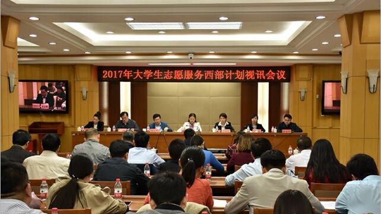

2017年大学生志愿服务西部计划启动
桂电志愿者网 日期：2017-04-28 来源：人民日报

4月26日,共青团中央、教育部、财政部、人力资源社会保障部在北京召开视讯会议,正式启动2017年大学生志愿服务西部计划工作。团中央书记处书记尹冬梅,教育部、财政部、人力资源社会保障部有关负责同志出席会议并讲话。各省(区、市)团委、教育、财政、人社部门负责人及西部计划高校项目办、服务县项目办负责人在分会场参加会议。
会议指出,西部计划是落实人才强国战略推进西部治理的精品项目,是助推高校思想政治工作彰显立德树人的重大举措,是适应志愿服务发展新态势提升青年志愿服务水平的品牌工程。各级项目办要牢固树立新发展理念,贯彻落实统筹推进“五位一体”总体布局,协调推进“四个全面”战略布局,全面落实中共中央办公厅、国务院办公厅《关于进一步引导和鼓励高校毕业生到基层工作的意见》和《中长期青年发展规划(2016-2025年)》等文件精神,从全面深化改革和全面从严治团的大局出发,深刻认识西部计划的新形势、新任务,深入提升项目实施的新水平、新贡献。
会议强调,西部计划是全团的一项重要工作,是迄今为止持续时间最长、参与人数最多、国家支持最大、社会影响最广、青春故事最精彩的志愿服务品牌项目。2017年是西部计划项目稳中求进、提质增效、做大品牌的关键一年,其核心工作是着力聚焦服务大局,精准对接国家战略;着力聚焦科学管理,完善机制体制建设;着力聚焦服务保障,创造成长成才条件;着力聚焦示范引领,提升项目综合成效。各级项目办要切实增强政治意识、大局意识、核心意识、看齐意识,统筹推进西部计划科学深入发展,增强全国项目办和各级项目办自身能力建设,提高项目执行质量,发挥项目育人功能,扩大项目对西部经济社会发展的贡献度,不断推进西部计划项目优化升级,更好地引导和鼓励高校毕业生到西部基层工作,以优异的工作业绩迎接党的十九大的召开,为实现“两个一百年”奋斗目标和中华民族伟大复兴的中国梦作出新的更大的贡献。
会上,西部计划山东、重庆项目办及中南民族大学、中山大学有关负责同志就落实好西部计划政策,做好管理服务、招募选拔、志愿精神弘扬和研究生支教团等工作作了经验交流发言。
据悉,2017年西部计划于4月6日至6月10日接受普通高等学校应届毕业生或在读研究生报名(详情请登录西部计划官方网站:xibu.youth.cn)。继续实施基础教育、农业科技、医疗卫生、基层青年工作、基层社会管理、服务西藏、服务新疆等7个服务专项。继续巩固服务新疆、服务西藏专项成果,保持民族地区万人左右实施规模。
据了解,2016年西部计划项目执行方式调整后,多方统筹协力推进,志愿者保障体系逐步完善,管理服务水平不断提升,示范引领效果持续彰显。14年来,累计有24万余名高校毕业生参加西部计划,一批批志愿者高扬理想旗帜,自觉踏实奉献,在广袤的西部大地和基层实践中谱写了一曲曲壮丽的青春奉献之歌。
【责任编辑：人民日报】